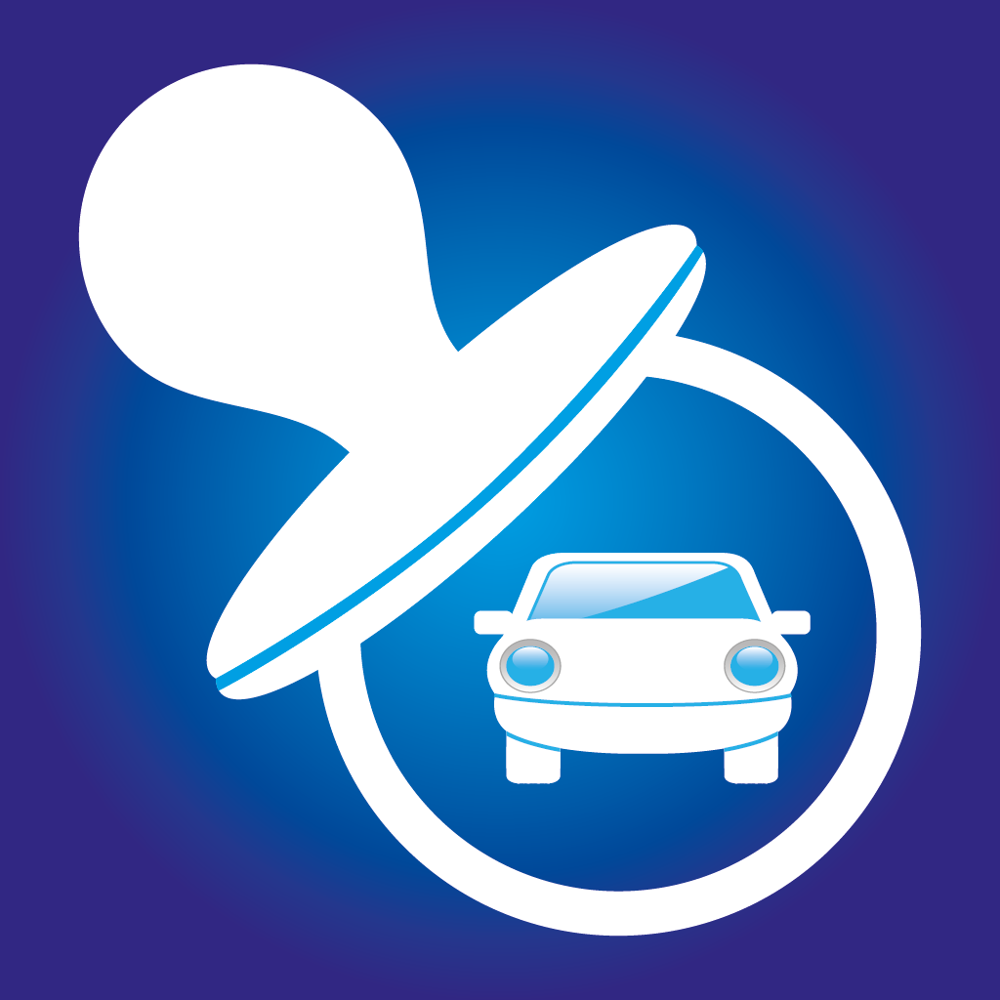

BabySafeDrive+ / iPhone
Before you leave.
Check your child.
Build a check into your routine with driving and scheduled reminders from BabySafeDrive+.
A small reminder.
An essential habit.
Choose the days and hours when your child usually rides with you. BabySafeDrive+ uses your iPhone’s location and speed to detect driving and schedule reminders after you stop.
Setup and support
01 / YOUR ROUTINE
Reminders that fit your day
Set driving reminder time ranges, choose days, or add a one-time or recurring time reminder.
02 / YOUR SETTINGS
Adjust driving reminders
Choose a driving speed threshold and reminder delays. An optional charging check arms driving reminders only while your phone is charging.
03 / YOUR HISTORY
Review recent activity
See detected drives, reminders and acknowledgements in the local history. Clear that history whenever you choose.